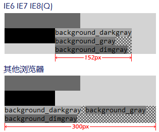
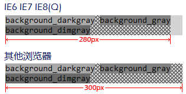

如果一个浮动元素的 'width' 是 'auto'，并且它是一个非替换元素，那么它的宽度将会是shrink-to-fit。
shrink-to-fit的计算公式：min(max(preferred minimum width, available width), preferred width)
CSS2.1 并未给出 preferred minimum width、available width 和 preferred width 确切算法，通常，将内容中非明确的换行外的其他部分强制不换行来计算 preferred width；反之，尝试将内容尽可能的换行，以得到 preferred minimum width；available width 即该元素的包含块的宽度减去 'margin-left'，'border-left-width'，'padding-left'，'padding-right'，'border-right-width'，'margin-right' 的值以及任何存在的纵向滚动条的宽度。
关于浮动非替换元素宽度计算的详细资料，请参考 CSS2.1 规范 10.3.5 Floating, non-replaced elements 中的内容。
在 IE6 IE7 IE8(Q) 中，如果一个浮动元素的宽度是 shrink-to-fit，该元素的最终宽度可能比预期的小，并被尽可能的向上布局。
这个问题将导致一些元素在各浏览器中的实际尺寸不一致，在有些浏览器中可能发生布局混乱的现象。
| IE6 IE7 IE8(Q) |
|---|
分析以下代码：
<div id="Container" style="width:300px; background:lightgrey; font:14px Consolas;
overflow:auto;"> <div id="Placeholder_150" style="float:left; width:150px;
height:30px; background:dimgray;"></div> <div id="Placeholder_100"
style="clear:both; float:left; width:100px; height:30px; background:black;"></div> <div
id="STF" style="float:left; background:url(x.gif);">
<span id="A" style="background:darkgray;">background_darkgray</span>
<span id="B" style="background:gray;">background_gray</span> <span
id="C" style="background:dimgray;">background_dimgray</span> </div>
</div>注意：如果 STF 内包含右浮动元素，将触发由 IE6 IE7 IE8(Q) 中布局右浮动元素时的 Bug，导致 STF 的宽度尽可能的宽。
根据 CSS2.1 规范中 shrink-to-fit 的计算公式，获取 STF 的几个关键值：
preferred minimum width：将 STF 中所有元素尽可能的换行，最宽的元素是 B，为 152px。
available width：即 Container 的宽度，为 300px。
preferred width：将 STF 中所有元素尽可能的不换行，即
A、B、C 的宽度之和，再加上 A 和
B 之间、B 和 C 之间的两个压缩后的空格，为 432px。
将结果代入计算公式：
min(max(152, 300), 432) = 300
也就是说，最终 STF 的宽度应该是 300px。
这段代码在不同的浏览器环境中表现如下：

删除 Placeholder_100 和 Placeholder_150 后：

可见，在 IE6 IE7 IE8(Q) 中，STF 的宽度计算并非是按照 CSS2.1 规范中描述的 shrink-to-fit 算法来进行的。
推测其算法如下：
第一张图是因为第一行的 Placeholder_150 占据了 150px，导致该行剩余空间仅有 150px，无法放置 STF 中最宽的内容 A，因此换到第二行继续尝试。第二行的 Placeholder_100 占据了 100px，剩余 200px，大于 A 的宽度，因此在本行布局。顺次摆放其内容 A、B 和 C 后，取最长的一行 A 的宽度作为 STF 的最终宽度，即 152px。
第二张图的当前行宽度有 300px，因此 STF 在本行布局。放置了 A 和 B 后，剩余空间不足以放置 C，因此折行继续。全部内容放置完毕后，将其内容中最宽的、放置了 A 和 B 的行的宽度作为其最终宽度，即 152 + 120 + 8 = 280 (px)。（注：8px 是 A 和 B 中间被压缩的空白字符的宽度。）
在其他浏览器中，第一张图中的 STF 以及第二张图中的 STF 的最终宽度均为 300px，是正确的值。
这个差异是由 IE6 IE7 IE8(Q) 中浮动元素的 shrink-to-fit 的不规范算法造成的。
该问题将导致受影响的元素的宽度比预期的小，并且尽可能的靠上布局。
该问题在 IE8(S) 中被修复。在 IE8(S) 中，浮动元素的 shrink-to-fit 的算法与 CSS2.1 规范中描述的算法一致。
如果一个页面在 IE6(S) IE7(S) 或 IE6(Q) IE7(Q) IE8(Q) 中被设计，并且有该问题存在，那么这个页面在其他浏览器中的布局将与预期的不符。
关于 block formatting context 的详细资料，请参考 CSS2.1 规范 9.4.1 Block formatting contexts 中的内容。
这个问题的影响较大，避免该问题的最直接的方式是给浮动非替换元素指定一个宽度，而不使用其默认值 'auto'，从而避免其宽度为 shrink-to-fit，以使页面布局在各浏览器中的表现一致。
| 操作系统版本: | Windows 7 Ultimate build 7600 |
|---|---|
| 浏览器版本: |
IE6
IE7 IE8 Firefox 3.6 Chrome 4.0.302.3 dev Safari 4.0.4 |
| 测试页面: | shrink_to_fit.html |
| 本文更新时间: | 2010-06-21 |
float left right shrink-to-fit 顶部 折行 缩小